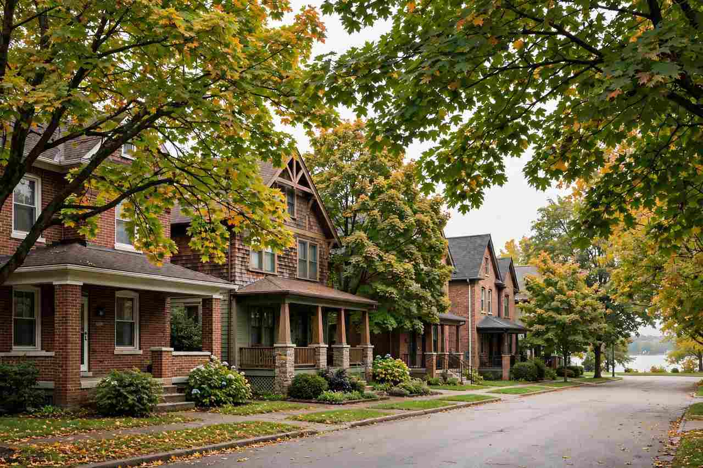

Rodent Control · Rawson, OH
Fast Rodent Control in Rawson, OH
If rodents have moved into your Rawson home or business, Murvo can help today. Our local, licensed crews provide same-day inspection, targeted removal, durable exclusion, and cleanup, all under one flat-rate written quote with a written guarantee. No hourly billing and no surprise add-ons, just rodent specialists serving Rawson and communities throughout Hancock County every day of the week. Service covers 1 ZIP codes across Hancock County, including 45881, with same-day appointments where schedules allow.
24/7Availability
1ZIP codes covered
Same-dayResponse
Licensed · Upfront options · Written guarantees · Fully insured
Rawson at a glance
Local Rodent Control for Rawson, OH.
Hancock County
Countynorthwest Ohio
RegionToledo · 50 mi
Nearest metro80 miles northwest of Columbus
From Columbus1
ZIP codes covered Service by service in Rawson
Rodent Control Services Available in Rawson
Thirty rodent services, one local standard in Rawson: inspection-led, exclusion-first, and quoted in writing before work begins. Browse the full list for Hancock County below - each section explains what the service involves here, what it typically costs nationally, and how fast we can start.
- 01Rodent Control↗
- 02Rodent Inspection↗
- 03Rodent Removal↗
- 04Rodent Exclusion↗
- 05Rodent Proofing↗
- 06Rat Control↗
- 07Mice Control↗
- 08Mouse Removal↗
- 09Rat Removal↗
- 10Rodent Trapping↗
- 11Rodent Baiting↗
- 12Rodenticide Application↗
- 13Attic Rodent Removal↗
- 14Crawl Space Rodent Removal↗
- 15Wall Rodent Removal↗
- 16Kitchen Rodent Control↗
- 17Garage Rodent Control↗
- 18Commercial Rodent Control↗
- 19Residential Rodent Control↗
- 20Emergency Rodent Removal↗
- 21Same-Day Rodent Control↗
- 22Rodent Damage Repair↗
- 23Rodent Waste Cleanup↗
- 24Rodent Disinfection↗
- 25Rodent Odor Removal↗
- 26Dead Rodent Removal↗
- 27Rodent Dropping Cleanup↗
- 28Rodent Exclusion for Roofs↗
- 29Rodent Exclusion for Vents↗
- 30Rodent Exclusion for Chimneys↗
Rodent Control in Rawson
Rodent Control in Rawson
In vintage duplexes and stone homes, brick bungalows, older single-family homes, and farm and rural properties, rodents rarely use the front door. They follow basement foundations, alley-facing garage doors, sewer laterals, and gaps around utility lines and sills, settle where it stays warm, and expand from there across Hancock County homes. Our rodent control pairs careful identification of Norway rat (Rattus norvegicus) and House mouse (Mus musculus) with trapping, sealing, and monitoring, handled by licensed and insured technicians who document each stage for you.
When you need rodent control in Rawson, the job starts with what is actually happening in your part of Hancock County. Murvo crews work Rawson every week, so they know how Norway rat (Rattus norvegicus) and House mouse (Mus musculus) behave around vintage duplexes and stone homes, brick bungalows, older single-family homes, and farm and rural properties here - and where they get in: basement foundations, alley-facing garage doors, sewer laterals, and gaps around utility lines and sills. We arrive equipped for the full job, confirm the flat rate in writing before work begins, and cover the whole Rawson area, including Mount Cory, Benton Ridge. No call-center runaround and no open-ended hourly billing - just a local crew, a clear plan, and a written quote you approve first. In Rawson, rodent control calls most often involve vintage duplexes and stone homes, brick bungalows, older single-family homes, and farm and rural properties, where basement foundations, alley-facing garage doors, sewer laterals, and gaps around utility lines and sills decide whether the fix holds.
We start by identifying whether Norway rat (Rattus norvegicus), House mouse (Mus musculus), or both are active, because each species nests, feeds, and travels differently. Once numbers fall, exclusion sealing closes the route back in, droppings and nesting debris are removed hygienically, and follow-up monitoring checks the attic, crawl space, and kitchen until readings stay clear. Nothing is sealed while animals remain inside. Traps are placed on proven runways along walls, beams, and pipe runs, checked on schedule, and adjusted as catches change. That order protects your home.
Getting started takes one conversation, day or night, because our lines stay open 24/7. We book a window that suits your household, confirm access needs in advance, and arrive prepared. Work proceeds only after your approval, in stages you can follow, and a final walkthrough reviews every seal and every monitoring result before sign-off. Questions after sign-off are welcome at any hour, and the same written record helps any technician pick up your case immediately.
Need help quickly in Rawson? Call any time — the emergency line is staffed 24/7, and same-day rodent control appointments are available in most areas. We inspect first, explain the plan in plain language, and put the flat rate in writing before work starts. In Hancock County, activity follows the local season, so timing the work matters as much as the method.
The honest answer is that it depends on species, activity level, and how much sealing your home needs, which is why Murvo inspects first and then gives you a flat-rate quote in writing. For national context only, Angi's 2026 data averages rat and mouse removal and control at $396, typically $189 to $655; that is not a Murvo price, and your written quote is the figure you pay.
Rodent Inspection in Rawson
Rodent Inspection in Rawson
In vintage duplexes and stone homes, brick bungalows, older single-family homes, and farm and rural properties, the gap that matters is seldom the gap you can see. Rodents enter through basement foundations, alley-facing garage doors, sewer laterals, and gaps around utility lines and sills and travel hidden routes, so a rodent inspection in Hancock County has to look behind, above, and below. Our technicians trace those routes systematically and explain, in plain language, which findings demand action now.
When you need rodent inspection in Rawson, the job starts with what is actually happening in your part of Hancock County. Murvo crews work Rawson every week, so they know how Norway rat (Rattus norvegicus) and House mouse (Mus musculus) behave around vintage duplexes and stone homes, brick bungalows, older single-family homes, and farm and rural properties here - and where they get in: basement foundations, alley-facing garage doors, sewer laterals, and gaps around utility lines and sills. We arrive equipped for the full job, confirm the flat rate in writing before work begins, and cover the whole Rawson area, including Mount Cory, Benton Ridge. No call-center runaround and no open-ended hourly billing - just a local crew, a clear plan, and a written quote you approve first. In Rawson, rodent inspection calls most often involve vintage duplexes and stone homes, brick bungalows, older single-family homes, and farm and rural properties, where basement foundations, alley-facing garage doors, sewer laterals, and gaps around utility lines and sills decide whether the fix holds.
We listen first: when you hear noises, and where, often points straight to the most active nesting areas. The visit ends with a written report covering species, entry points, contamination, and the removal and exclusion steps we recommend, each with a flat-rate price. Technicians then trace active runways, identify whether droppings belong to Norway rat (Rattus norvegicus) or House mouse (Mus musculus), and check insulation and wiring for damage. That detail stops you paying for treatment aimed at the wrong species or the wrong part of the building.
Booking a rodent inspection in Rawson takes one call, and same-day appointments are often available. Findings are explained with photos before you receive a flat-rate written quote for any recommended work. Nothing proceeds without your approval, and urgent items are clearly flagged. Your technician arrives on time, walks the property with you, and inspects the attic, crawl space, and exterior in one visit. You keep the full written report either way.
Inspections are the fastest way we help in Rawson: same-day appointments are available in most areas, and urgent calls are answered 24/7. A typical rodent inspection takes under an hour for most homes, and you leave the visit with photos, written findings, and a flat-rate quote for any work we recommend, so decisions never wait on us. That is also why Murvo pairs removal with exclusion in Rawson - treating the animal without closing basement foundations, alley-facing garage doors, sewer laterals, and gaps around utility lines and sills rarely lasts.
Nationally, a professional rodent inspection typically runs $100 to $200 according to Angi's 2026 data, and it is often credited toward the job if you proceed. Murvo confirms your exact rodent inspection price before the visit and quotes any follow-up work as a flat rate in writing after inspection, so the figure you approve is the figure you pay, with no hourly billing.
Rodent Removal in Rawson
Rodent Removal in Rawson
Most Rawson removal calls start after a homeowner has already tried a store-bought trap and caught nothing. The difference is placement and persistence. Murvo locates nests first, sets traps on confirmed routes for Norway rat (Rattus norvegicus) and House mouse (Mus musculus), returns until catches end, and quotes the whole program as one flat-rate written quote.
When you need rodent removal in Rawson, the job starts with what is actually happening in your part of Hancock County. Murvo crews work Rawson every week, so they know how Norway rat (Rattus norvegicus) and House mouse (Mus musculus) behave around vintage duplexes and stone homes, brick bungalows, older single-family homes, and farm and rural properties here - and where they get in: basement foundations, alley-facing garage doors, sewer laterals, and gaps around utility lines and sills. We arrive equipped for the full job, confirm the flat rate in writing before work begins, and cover the whole Rawson area, including Mount Cory, Benton Ridge. No call-center runaround and no open-ended hourly billing - just a local crew, a clear plan, and a written quote you approve first. Coverage for rodent removal spans 1 ZIP codes in Hancock County, including 45881.
We favor trap-based, no-poison removal first where practical, which is safer around children and pets and avoids animals dying in hidden voids. Dead animals in inaccessible places are located and retrieved before odor develops, contaminated nesting material is removed, and sealing recommendations are prioritized so the route indoors closes permanently. Traps are matched to the species and setting, placed where droppings and rub marks show real travel routes, then cleared and reset until numbers reach zero. Monitoring then confirms the home stays clear.
Once you book rodent removal in Rawson, we agree a time window and your technician arrives with traps, protective equipment, and a clear plan. Progress is photographed and shared with you throughout the program. The first visit confirms activity and sets traps; return visits clear and reset them on schedule. When catches reach zero, we walk through the results, discuss sealing, and confirm your written guarantee before closing the job. Nothing is left unexplained.
For active infestations in Rawson, rodent removal can usually start the same day you call, and our team answers 24/7 when a rodent is loose in a living area. The first visit confirms activity and sets traps straight away; return visits then clear and reset them until monitoring shows the property is completely clear. The written quote for your Rawson property will spell out exactly which of these applies before any work starts.
How many animals are active, which species they are, and how much sealing follows removal all shape the price, so we assess first and then quote one flat rate in writing. Angi's 2026 national context — an average of $396 and a typical $189 to $655 range for rat and mouse removal — is provided for comparison only; your written quote is the exact Murvo figure.
Rodent Exclusion in Rawson
Rodent Exclusion in Rawson
Most Rawson exclusion jobs start with a simple question: where exactly are they getting in? Murvo answers it opening by opening, then seals each one with material matched to its size and location. You see the full list, and one flat-rate written quote, before a single gap gets closed.
When you need rodent exclusion in Rawson, the job starts with what is actually happening in your part of Hancock County. Murvo crews work Rawson every week, so they know how Norway rat (Rattus norvegicus) and House mouse (Mus musculus) behave around vintage duplexes and stone homes, brick bungalows, older single-family homes, and farm and rural properties here - and where they get in: basement foundations, alley-facing garage doors, sewer laterals, and gaps around utility lines and sills. We arrive equipped for the full job, confirm the flat rate in writing before work begins, and cover the whole Rawson area, including Mount Cory, Benton Ridge. No call-center runaround and no open-ended hourly billing - just a local crew, a clear plan, and a written quote you approve first. In Rawson, rodent exclusion calls most often involve vintage duplexes and stone homes, brick bungalows, older single-family homes, and farm and rural properties, where basement foundations, alley-facing garage doors, sewer laterals, and gaps around utility lines and sills decide whether the fix holds.
The sequence matters as much as the materials. Photographs record every finished seal with its location, building a reference you keep. Because a properly sealed home needs far less ongoing treatment, exclusion also lowers long-term reliance on bait. A later monitoring check tests the work honestly, revisiting each sealed point for fresh rub marks, droppings, or gnawing. Active openings are closed first, inactive weaknesses next, and purely cosmetic gaps last, so protection arrives where pressure is highest. The final monitoring visit therefore matters as much as the sealing day itself, and its findings are shared.
Before sealing day, confirm pets are secured and access to the roofline and foundation is clear. The crew then works through the agreed list, checks that no animals remain inside, and fits each seal cleanly. Afterwards you receive the photographs, the guarantee, and a date for the follow-up check that confirms everything is holding as intended. If monitoring ever finds fresh activity at a sealed point, that written inventory tells us exactly what to inspect first.
Rodent exclusion in Rawson usually starts with a survey visit we can often schedule the same day you call. Sealing itself is booked as soon as any active animals are cleared, because nothing is sealed inside. Most homes are fully sealed within days, not weeks, and urgent entry points near wiring or food areas are prioritized first. That is also why Murvo pairs removal with exclusion in Rawson - treating the animal without closing basement foundations, alley-facing garage doors, sewer laterals, and gaps around utility lines and sills rarely lasts.
After the survey of your Rawson home, every opening that needs sealing is listed and priced as one flat-rate written quote, so you pay only for the work your property needs. For national context, Angi's 2026 data puts basic exclusion at $200 to $600 depending on access and the number of openings; that benchmark is not a Murvo price.
Rodent Proofing in Rawson
Rodent Proofing in Rawson
As colder weather approaches Hancock County, rodents actively hunt for warm indoor shelter, and unsealed homes are found fast. A Murvo rodent proofing survey checks the roofline, vents, utility entries, and doors before that rush begins. Because proofing prevents infestations instead of reacting to them, it reduces reliance on baits and is backed by our written workmanship guarantee.
Homeowners in Rawson call Murvo for rodent proofing because the problem here is specific: Norway rat (Rattus norvegicus) pressure around vintage duplexes and stone homes, brick bungalows, older single-family homes, and farm and rural properties, tight access at basement foundations, alley-facing garage doors, sewer laterals, and gaps around utility lines and sills, and activity that follows the local season. Our Hancock County crews diagnose the real source before recommending work, explain the options in plain language, and quote one flat rate in writing. Across Rawson - including Mount Cory, Benton Ridge - every visit is backed by licensed, insured technicians and our written workmanship guarantee. Coverage for rodent proofing spans 1 ZIP codes in Hancock County, including 45881.
Proofing divides naturally into structure, surroundings, and habits. Habits means securing pet food, bird seed, and stored produce so the property stops advertising itself. Structure means sealing utility entries, screening vents and chimneys, and fitting sweeps where doors leak light. Surroundings means trimming branches back from the roofline, moving clutter and timber away from walls, and reducing sheltered harborage. Technicians assess all three layers in one survey and rank the combined findings by impact, not by what is easiest to sell.
Arrange a survey at a time that suits you; there is no emergency, so scheduling stays relaxed. You then receive a written quote separating essential work from optional improvements, and nothing proceeds without your say-so. Your technician walks every side of the property with you, photographs weak points, and talks through the plan in plain language. Staging the work is fine; essential sealing can proceed first while optional improvements wait until a season or budget that suits you better.
Proofing is planned work rather than an emergency, but you can still move fast: rodent proofing surveys in Rawson are often available the same day and always within a few days. Once you approve the plan, most work is finished in a single visit, ideally before colder weather drives rodents indoors. If you are seeing signs now, an inspection this week is the fastest way to know which situation you are in.
For national context, Angi's 2026 data puts exclusion, the core of proofing, at $200 to $600 for basic work. That figure is a benchmark, not a Murvo price. After surveying your Rawson property, we separate quick homeowner wins from specialist sealing and quote the professional work as one flat rate in writing, so you can stage spending sensibly.
Rat Control in Rawson
Rat Control in Rawson
What separates control from a temporary lull? Monitoring that continues after the last catch. Murvo keeps checking until routes stay quiet, removes trapped rats hygienically, and finishes with exclusion so replacements cannot follow the same path. Licensed, insured technicians document every visit, and urgent calls are answered 24/7.
Homeowners in Rawson call Murvo for rat control because the problem here is specific: Norway rat (Rattus norvegicus) pressure around vintage duplexes and stone homes, brick bungalows, older single-family homes, and farm and rural properties, tight access at basement foundations, alley-facing garage doors, sewer laterals, and gaps around utility lines and sills, and activity that follows the local season. Our Hancock County crews diagnose the real source before recommending work, explain the options in plain language, and quote one flat rate in writing. Across Rawson - including Mount Cory, Benton Ridge - every visit is backed by licensed, insured technicians and our written workmanship guarantee. Around Benton Ridge, Jenera, Bluffton, the pattern is similar: House mouse (Mus musculus) finds basement foundations, alley-facing garage doors, sewer laterals, and gaps around utility lines and sills first, and lasting rat control has to close those routes.
Wary rats punish rushed trapping, so the program begins with patience. Unset traps are placed on confirmed runways and pre-baited until feeding becomes confident and regular. Only then are traps set, checked frequently, and repositioned as the pattern shifts. Catches are recorded by location, giving a clear picture of colony size and movement. Exclusion follows at rooflines and entry points, and monitoring devices remain in place afterwards to verify that quiet routes have genuinely stayed quiet. Counts matter here, because a falling catch trend tells a different story from a single lucky night.
Call for rat control in Rawson and we will book an inspection, often the same day for active problems. The job closes only when monitoring confirms rats are gone and exclusion is complete. Your technician maps routes and harborage, explains the trapping plan, and gives you a flat-rate written quote before any work begins. Trapping visits then run on a set schedule, with placements adjusted as activity shifts. Your guarantee is confirmed in writing.
Call day or night — urgent rat control calls in Rawson are answered 24/7, and a same-day inspection can usually start the program. Pre-baiting begins on that first visit once you approve the written quote, traps are set when rats are feeding confidently, and scheduled checks continue until activity stops. If you are seeing signs now, an inspection this week is the fastest way to know which situation you are in.
Species, colony size, and the number of entry points to seal all affect rat work, which is why Murvo inspects first and quotes one flat rate in writing. Angi's 2026 figures, given for national context only, average rat control and removal at $396 and typically run $189 to $655; the written quote for your Rawson home is the exact price.
Mice Control in Rawson
Mice Control in Rawson
In vintage duplexes and stone homes, brick bungalows, older single-family homes, and farm and rural properties, mice think small, and control has to think smaller. A gap at basement foundations, alley-facing garage doors, sewer laterals, and gaps around utility lines and sills no wider than a pencil is an open door, and pipe runs become private highways across Hancock County homes. Our technicians hunt those overlooked routes for House mouse (Mus musculus) activity, then combine trapping, sealing, and food-storage advice.
In Rawson, mice control is not a generic spray-and-go service. Rodents exploit basement foundations, alley-facing garage doors, sewer laterals, and gaps around utility lines and sills in vintage duplexes and stone homes, brick bungalows, older single-family homes, and farm and rural properties, and a fix that ignores those routes does not last. Murvo's Rawson team inspects first, shows you the evidence - droppings, gnaw marks, entry gaps - and then lays out the work with a flat-rate written quote. We serve all of Hancock County from Rawson, including Mount Cory, Benton Ridge, and every job is covered by our written workmanship guarantee. Coverage for mice control spans 1 ZIP codes in Hancock County, including 45881.
Hygiene is part of control, not an afterthought. Droppings in cabinets are never dry-swept; surfaces are disinfected first, following careful practice, so contamination is not pushed into the air, and nesting debris is bagged and removed. Technicians also review how food, pet supplies, and bird seed are stored, since an open supply restarts activity quickly. The program favors traps over bait throughout, which keeps family kitchens safer and makes every result countable and visible. Follow-up monitoring then verifies the kitchen, attic, and voids together, rather than treating each room in isolation.
Book with one call and tell us which rooms show signs; same-day surveys are often possible. Check visits are scheduled immediately, and each one reports catches plainly until the final confirmation visit shows activity has stopped. Your technician inspects kitchen, attic, and voids, explains the route map, and quotes in writing before traps are set. The final confirmation matters, because mice can go quiet briefly while a nest remains, and monitoring distinguishes quiet from genuinely finished.
Mice multiply fast, so mice control in Rawson is built to start fast too: a survey can often be arranged the same day you call, with traps set on that first visit once the quote is approved. Because mice investigate new objects quickly, catches usually begin soon after, and check visits follow until a final confirmation shows activity has stopped. In Hancock County, most cases involve the Norway rat (Rattus norvegicus) and the House mouse (Mus musculus), so the inspection focuses on their routes first.
The number of rooms affected and the amount of sealing required set the price, so Murvo surveys first and quotes one flat rate in writing. For national context only, Angi's 2026 data averages rat and mouse control and removal at $396, typically $189 to $655 — not a Murvo price; your written quote is exact.
Mouse Removal in Rawson
Mouse Removal in Rawson
Most Rawson removal jobs begin in one room and end with evidence in three, because mice nest close to food and travel widely at night. Murvo surveys room by room, runs traps at every active site, and seals behind the work. The full program is one flat-rate written quote.
In Rawson, mouse removal is not a generic spray-and-go service. Rodents exploit basement foundations, alley-facing garage doors, sewer laterals, and gaps around utility lines and sills in vintage duplexes and stone homes, brick bungalows, older single-family homes, and farm and rural properties, and a fix that ignores those routes does not last. Murvo's Rawson team inspects first, shows you the evidence - droppings, gnaw marks, entry gaps - and then lays out the work with a flat-rate written quote. We serve all of Hancock County from Rawson, including Mount Cory, Benton Ridge, and every job is covered by our written workmanship guarantee. Homes near Benton Ridge tend to show activity first in Rawson, which is why inspections start with basement foundations, alley-facing garage doors, sewer laterals, and gaps around utility lines and sills.
The survey comes first, and it is deliberately thorough. Lofts, under-floor voids, cabinets, and the spaces behind kitchen units are checked for nests, droppings, and stored food caches. Traps are then set in multiples at proven points, because a single trap rarely reflects colony size. Returns are scheduled tightly: catches are cleared, traps reset, and numbers tracked until they fall to zero and stay there across a confirming check before sealing begins. Photographs of nesting sites help here, because they reveal how far activity had spread before trapping began.
Booking takes one call. We agree a time window, and your background-checked technician arrives ready to survey attics, cabinets, and voids in one visit. Work begins only after you approve the written quote, and trap checks are booked ahead so nothing drifts. At sign-off we review catch records together, confirm sealing is complete, and leave you with guarantee paperwork and prevention advice. Rooms are confirmed fully safe to use again.
In Rawson, mouse removal can often begin the same day you call, especially where mice are active in kitchens or living areas. The first visit surveys nesting sites and sets traps immediately after you approve the quote; because mice investigate traps quickly, catches usually start fast, and return visits continue until numbers reach zero. A Rawson inspection confirms it on site - dropping size, gnaw marks, and entry points tell the story quickly.
Rooms involved and sealing needed determine the cost of removal, so we survey first and agree a flat rate in writing before work begins. As national context only, Angi's 2026 data averages rat and mouse removal at $396, with a typical range of $189 to $655; that benchmark is not a Murvo price, and your written quote covers your exact program.
Rat Removal in Rawson
Rat Removal in Rawson
Most Rawson rat removals fail elsewhere for one reason: the colony was larger than the first visit assumed. Murvo assesses species and scale before trapping, pre-baits on confirmed runways, and returns until monitoring proves the colony gone. A flat-rate written quote is agreed before any trap is set.
When you need rat removal in Rawson, the job starts with what is actually happening in your part of Hancock County. Murvo crews work Rawson every week, so they know how Norway rat (Rattus norvegicus) and House mouse (Mus musculus) behave around vintage duplexes and stone homes, brick bungalows, older single-family homes, and farm and rural properties here - and where they get in: basement foundations, alley-facing garage doors, sewer laterals, and gaps around utility lines and sills. We arrive equipped for the full job, confirm the flat rate in writing before work begins, and cover the whole Rawson area, including Mount Cory, Benton Ridge. No call-center runaround and no open-ended hourly billing - just a local crew, a clear plan, and a written quote you approve first. Seasonal timing matters for rat removal in Rawson: rodents surge in Rawson from October through April.
We lead with trapping and exclusion in an integrated, pet-conscious approach, using locked bait stations only where genuinely justified and monitored on schedule. After clearance, contaminated insulation areas can be sanitized, and droppings are never dry-swept: following CDC guidance, surfaces are disinfected first before waste is removed. Monitoring devices and a final walkthrough then provide documented evidence that activity has ended, and ongoing proofing keeps drains, vents, and rooflines checked afterwards. That evidence is always shared with you in writing.
After booking, we confirm access needs for the attic, basement, or outbuildings so no time is wasted. Follow-up visits run on schedule until catches stop, then sealing and sanitation are completed. A final monitoring period confirms the home is clear before sign-off. On the first visit, your background-checked technician sets out the plan and begins pre-baiting once you approve the written quote. Progress is reported to you after every single visit.
In Rawson, rat removal can usually start the same day you call, with 24/7 answering for rats active in living areas. Pre-baiting begins on the first visit after you approve the written quote, and traps are set once rats feed confidently, typically within days. Repeat visits then run frequently until monitoring confirms the colony is gone. In Hancock County, activity follows the local season, so timing the work matters as much as the method.
Rat removal pricing depends on colony size, access, and the sealing needed afterwards, so Murvo assesses your property first and quotes a flat rate in writing. For national context only, Angi's 2026 data averages rat removal at $396, typically $189 to $655. That is a benchmark, not a Murvo price, and your written quote covers the full program described.
Rodent Trapping in Rawson
Rodent Trapping in Rawson
Why choose trapping over poison in a family home? Every result is visible, countable, and removable, with no chemicals loose indoors and no animals dying in hidden voids. Murvo offers snap, multi-catch, and live-capture options, explains each placement for pet and child safety, and guarantees the finished program in writing.
In Rawson, rodent trapping is not a generic spray-and-go service. Rodents exploit basement foundations, alley-facing garage doors, sewer laterals, and gaps around utility lines and sills in vintage duplexes and stone homes, brick bungalows, older single-family homes, and farm and rural properties, and a fix that ignores those routes does not last. Murvo's Rawson team inspects first, shows you the evidence - droppings, gnaw marks, entry gaps - and then lays out the work with a flat-rate written quote. We serve all of Hancock County from Rawson, including Mount Cory, Benton Ridge, and every job is covered by our written workmanship guarantee. The Rawson crews who handle rodent trapping also handle the follow-through - proofing, cleanup, and monitoring - so one visit can close the whole problem.
Adjustment is where experience shows. Baits are refreshed and matched to what the species is already eating nearby. Households receive a simple map of device locations and safety guidance for children and pets. As numbers fall toward zero, attention shifts to exclusion recommendations and cleanup, converting a trapping program into lasting protection. If catches cluster at one end of a runway, placements concentrate there; if a route goes quiet while another warms up, devices move accordingly. Households can follow that adjustment process through the shared catch log, which records every change of position.
Between checks, leave devices untouched and note any new noises or droppings by room; that information sharpens the next visit. Your background-checked technician adjusts placements as the pattern changes and removes catches promptly and hygienically. The program ends with a clear monitoring result, a written summary of what was caught where, and sealing advice. The summary also notes which routes stayed busiest, information that makes any later exclusion work faster and more precisely targeted.
In Rawson, a rodent trapping program can usually start the same day you call, with traps placed or pre-baiting begun on the first visit after you approve the quote. Mice often investigate within the first night, while wary rats need a few days of pre-baiting before traps are set. Scheduled checks then keep the program moving until numbers reach zero. In Hancock County, most cases involve the Norway rat (Rattus norvegicus) and the House mouse (Mus musculus), so the inspection focuses on their routes first.
Trapping is usually quoted as part of a complete removal program rather than by the trap, and the price depends on species, activity level, and how many check visits are needed. Murvo inspects first and quotes one flat rate in writing covering the program and its check visits, so there are no per-visit surprises and no hourly billing at any stage.
Rodent Baiting in Rawson
Rodent Baiting in Rawson
What rules govern bait near children, pets, and wildlife in Ohio? Strict ones, and Murvo follows them plainly. State rules restrict anticoagulant rodenticides, and Murvo applies the same care everywhere: no loose bait, no open trays, no unmonitored stations. Before placement, you review locations, risks, and alternatives with a licensed technician.
Homeowners in Rawson call Murvo for rodent baiting because the problem here is specific: Norway rat (Rattus norvegicus) pressure around vintage duplexes and stone homes, brick bungalows, older single-family homes, and farm and rural properties, tight access at basement foundations, alley-facing garage doors, sewer laterals, and gaps around utility lines and sills, and activity that follows the local season. Our Hancock County crews diagnose the real source before recommending work, explain the options in plain language, and quote one flat rate in writing. Across Rawson - including Mount Cory, Benton Ridge - every visit is backed by licensed, insured technicians and our written workmanship guarantee. Around Benton Ridge, Jenera, Bluffton, the pattern is similar: House mouse (Mus musculus) finds basement foundations, alley-facing garage doors, sewer laterals, and gaps around utility lines and sills first, and lasting rodent baiting has to close those routes.
Where baiting is not appropriate indoors, we say so, and recommend trapping first followed by proofing of gaps around pipes, vents, and doors. That exclusion-first approach reduces reliance on bait over time, which matters for households with children, pets, or visiting wildlife in Rawson. Consumption records from each visit show whether activity is falling, holding, or moving, guiding whether stations stay, move, or come out entirely in favor of sealing and trapping alone. You receive those records after every monitoring visit.
Booking rodent baiting in Rawson starts with an inspection, not a station. Your technician maps activity, reviews pet, child, and wildlife concerns with you, and confirms a flat-rate written quote before anything is placed. Approved stations are installed locked and labeled the same visit, with locations photographed for you. Monitoring visits are scheduled before we leave, and stations come out once activity is confirmed clear. Your written guarantee covers the full program.
Deliberate setup matters more than speed with rodent baiting, but the first step is still fast: an inspection in Rawson can often be arranged the same day you call. Stations are placed only after activity is mapped and you approve the written quote and each location, then monitoring runs on a fixed schedule until consumption stops and activity is confirmed clear. If you are seeing signs now, an inspection this week is the fastest way to know which situation you are in.
Baiting cost depends on how many locked stations your property needs and how long monitoring runs, so Murvo inspects and maps activity first, then quotes one flat rate in writing covering placement and scheduled checks. There are no per-visit surprises, and because our approach is exclusion-first, the goal is always to reduce and eventually remove stations, not maintain them forever.
Rodenticide Application in Rawson
Rodenticide Application in Rawson
Our approach in Rawson is exclusion-first: seal entry points, trap active animals, and shrink the need for chemical control quickly. Where rodenticide application is genuinely justified for Norway rat (Rattus norvegicus) or House mouse (Mus musculus), a licensed technician maps, labels, and anchors every station, records amounts at each visit, and retrieves dead rodents promptly where accessible to reduce odor and secondary risks.
When you need rodenticide application in Rawson, the job starts with what is actually happening in your part of Hancock County. Murvo crews work Rawson every week, so they know how Norway rat (Rattus norvegicus) and House mouse (Mus musculus) behave around vintage duplexes and stone homes, brick bungalows, older single-family homes, and farm and rural properties here - and where they get in: basement foundations, alley-facing garage doors, sewer laterals, and gaps around utility lines and sills. We arrive equipped for the full job, confirm the flat rate in writing before work begins, and cover the whole Rawson area, including Mount Cory, Benton Ridge. No call-center runaround and no open-ended hourly billing - just a local crew, a clear plan, and a written quote you approve first. In Rawson, rodenticide application calls most often involve vintage duplexes and stone homes, brick bungalows, older single-family homes, and farm and rural properties, where basement foundations, alley-facing garage doors, sewer laterals, and gaps around utility lines and sills decide whether the fix holds.
Monitoring data guides the whole treatment: whether it continues, changes product, or stops entirely in favor of proofing alone. We prioritize sealing entry points with exclusion and physical removal so dependence on chemical control shrinks visit by visit. Dead rodents are retrieved promptly where accessible, stations are kept away from pet and child areas, and every product used is documented with its label and safety information, so nothing applied at your property is ever hidden from you. State restrictions are checked before product selection.
Before the visit, tell us about children, pets, livestock, and wildlife using the property; that information shapes product and placement decisions. Scheduled checks follow until activity ends and stations are removed. On the day, your background-checked technician installs any approved stations locked and labeled, records the details, and explains what to watch for. Label information, amounts, and visit dates stay in your records throughout, so the treatment history is complete and available whenever needed.
In Rawson, rodenticide application begins with an inspection we can often schedule the same day you call, because no responsible application happens without one. If treatment is justified and you approve the written quote, locked stations are installed on that visit. Monitoring then runs on schedule, and treatment stops as soon as data shows activity has ended. Murvo's Rawson crews explain the finding either way, and the flat-rate quote leaves the decision with you.
Application cost depends on the number of locked stations, the product required under Ohio rules, and how long monitoring runs. Murvo inspects first, explains whether trapping or exclusion could avoid chemical control entirely, and then quotes one flat rate in writing before work begins. The quote covers scheduled monitoring visits, so there are no per-visit surprises later.
Attic Rodent Removal in Rawson
Attic Rodent Removal in Rawson
When chewed wiring appears overhead, treat it as urgent; damaged cables are a real fire risk. Murvo prioritizes those Rawson attics, clears animals with targeted trapping rather than poison, leaves monitoring briefly after sealing to confirm nothing remains inside, and backs the finished work with a written workmanship guarantee.
Homeowners in Rawson call Murvo for attic rodent removal because the problem here is specific: Norway rat (Rattus norvegicus) pressure around vintage duplexes and stone homes, brick bungalows, older single-family homes, and farm and rural properties, tight access at basement foundations, alley-facing garage doors, sewer laterals, and gaps around utility lines and sills, and activity that follows the local season. Our Hancock County crews diagnose the real source before recommending work, explain the options in plain language, and quote one flat rate in writing. Across Rawson - including Mount Cory, Benton Ridge - every visit is backed by licensed, insured technicians and our written workmanship guarantee. Coverage for attic rodent removal spans 1 ZIP codes in Hancock County, including 45881.
Attic work follows Inspect, Remove, Exclude, Clean, and Monitor. Once clear, roofline entry points are sealed with metal mesh and flashing as part of wider proofing, and dropping cleanup and disinfection are arranged where insulation is contaminated. A detailed inspection covers the attic, roof, and eaves, identifying species, nests, droppings, and gnawed cables. Targeted, humane trapping is then set in the attic to clear active animals quickly, with checks on schedule. Monitoring traps stay briefly after sealing to confirm the attic is empty and quiet.
Book attic rodent removal in Rawson and we will arrange an attic visit, same-day where chewed wiring or heavy activity makes it urgent. Trapping checks follow on schedule, sealing and cleanup complete the job, and monitoring confirms the attic stays clear under guarantee. Your technician inspects the attic and roofline, shows you photographs of the evidence, and confirms a flat-rate written quote before removal begins. You approve every stage before it happens.
In Rawson, attic rodent removal visits are often available the same day, and we prioritize attics where chewed wiring creates a fire risk. Trapping starts on the first visit after you approve the written quote, checks run on schedule, and most attics are cleared and sealed within days, with monitoring left briefly to confirm nothing remains inside. That is also why Murvo pairs removal with exclusion in Rawson - treating the animal without closing basement foundations, alley-facing garage doors, sewer laterals, and gaps around utility lines and sills rarely lasts.
Activity levels, roofline sealing, and whether contaminated insulation needs cleanup all affect attic pricing, so Murvo inspects first and quotes one flat rate in writing for the removal program. Cleanup options are priced separately in writing before you decide, so nothing is added once work is underway.
Crawl Space Rodent Removal in Rawson
Crawl Space Rodent Removal in Rawson
Murvo favors trapping and physical exclusion under Rawson homes over poison, an approach that protects pets that may access the crawl space and avoids carcasses hidden where they cannot be reached. Licensed, insured technicians document every sealed opening with photographs, refit access panels securely, and back the finished work with our written workmanship guarantee and monitoring checks.
In Rawson, crawl space rodent removal is not a generic spray-and-go service. Rodents exploit basement foundations, alley-facing garage doors, sewer laterals, and gaps around utility lines and sills in vintage duplexes and stone homes, brick bungalows, older single-family homes, and farm and rural properties, and a fix that ignores those routes does not last. Murvo's Rawson team inspects first, shows you the evidence - droppings, gnaw marks, entry gaps - and then lays out the work with a flat-rate written quote. We serve all of Hancock County from Rawson, including Mount Cory, Benton Ridge, and every job is covered by our written workmanship guarantee. Homes near Benton Ridge tend to show activity first in Rawson, which is why inspections start with basement foundations, alley-facing garage doors, sewer laterals, and gaps around utility lines and sills.
Cleanup beneath a home follows careful practice throughout. Photographs of every finished seal accompany your guarantee paperwork, creating a record of exactly what was closed. Droppings and nesting debris are never dry-swept, since disturbing them can spread contamination; surfaces are disinfected first, then waste is bagged and removed by technicians wearing protective equipment. Technicians also trace connections upward through wall voids, checking whether activity reaches the attic, and report moisture issues with practical recommendations. Vent and pier sealing is checked from inside the space, not assumed sound from a glance outside.
Schedule an under-home inspection, usually within days and sooner when odors reach living areas. Your technician photographs conditions below, explains findings in plain language, and confirms the written quote before any trapping. Clearance, vent screening, and cleanup then follow in sequence, with monitoring left in place until the space below is confirmed quiet. Photographs from below the home accompany the final paperwork, which is especially useful because few homeowners ever see that space themselves.
For crawl space rodent removal in Rawson, inspections are usually arranged within a few days — and sooner when odors are drifting into living areas or activity sounds heavy. Trapping begins on the first visit after you approve the written quote, clearance and sealing follow in sequence, and monitoring stays in place until the space below is confirmed quiet. Around Rawson, vintage duplexes and stone homes, brick bungalows, older single-family homes, and farm and rural properties give rodents the most cover, which is why entry points get checked before traps are set.
Access, the number of vents and gaps to seal, and whether waste cleanup is required all shape crawl-space pricing, so Murvo inspects first and quotes one flat rate in writing. Cleanup options are priced in writing before you decide whether to include them, and there are no surprise charges for extra vents within the agreed scope.
Wall Rodent Removal in Rawson
Wall Rodent Removal in Rawson
Wall voids are hidden highways through vintage duplexes and stone homes, brick bungalows, older single-family homes, and farm and rural properties in Rawson: mice travel them between kitchens and attics, and rats use them to reach food unseen via basement foundations, alley-facing garage doors, sewer laterals, and gaps around utility lines and sills. Our technicians carry inspection cameras for accessible voids, helping locate nests without opening large sections of drywall. If an animal has already died in the wall, retrieval and sanitation are handled too.
In Rawson, wall rodent removal is not a generic spray-and-go service. Rodents exploit basement foundations, alley-facing garage doors, sewer laterals, and gaps around utility lines and sills in vintage duplexes and stone homes, brick bungalows, older single-family homes, and farm and rural properties, and a fix that ignores those routes does not last. Murvo's Rawson team inspects first, shows you the evidence - droppings, gnaw marks, entry gaps - and then lays out the work with a flat-rate written quote. We serve all of Hancock County from Rawson, including Mount Cory, Benton Ridge, and every job is covered by our written workmanship guarantee. Coverage for wall rodent removal spans 1 ZIP codes in Hancock County, including 45881.
Locating comes before everything else in wall work. Trapping is then placed at those access points to draw rodents out of the void. Checks follow on schedule, and placements shift if monitoring shows activity has moved into a connected void instead. Technicians listen at different points, note when noises occur, trace likely entry routes from roofline, baseboards, and pipe runs, and use cameras in accessible voids to confirm where animals travel and nest. Notes from each listening check are compared over time, turning faint, inconsistent sounds into a reliable activity pattern.
Between visits, note the times and rooms where sounds continue, since that pattern guides adjustments. Your background-checked technician clears traps, checks connected voids, and runs quiet checks at varied times of day. Sign-off happens only when monitoring confirms silence, sealing and sanitation are complete, and your guarantee paperwork is confirmed in writing. Silence is checked more than once before sign-off, because a single quiet evening can mislead when an animal simply moves elsewhere.
In Rawson, wall rodent removal locating visits are often available the same day you call, especially for persistent scratching keeping you awake. Trapping is set at access points on that first visit once you approve the written quote, and because rodents travel the void nightly, results usually follow within days, confirmed by quiet-wall checks before we sign off. In Hancock County, most cases involve the Norway rat (Rattus norvegicus) and the House mouse (Mus musculus), so the inspection focuses on their routes first.
Wall work pricing depends on how precisely activity can be located and whether a minimal access cut is needed, which is why Murvo locates the activity first and quotes a flat rate in writing. That way wall access work never becomes an open-ended bill, and the quote covers the trapping, sealing, and monitoring described in your plan.
Kitchen Rodent Control in Rawson
Kitchen Rodent Control in Rawson
Behind the stove is where the trouble usually hides. Warmth, crumbs and a drip under the sink draw Norway rat (Rattus norvegicus) and House mouse (Mus musculus) night after night in Rawson kitchens. Murvo clears the activity, blocks the gaps they travel through, and gives you a flat-rate written quote before any work begins at your home.
When you need kitchen rodent control in Rawson, the job starts with what is actually happening in your part of Hancock County. Murvo crews work Rawson every week, so they know how Norway rat (Rattus norvegicus) and House mouse (Mus musculus) behave around vintage duplexes and stone homes, brick bungalows, older single-family homes, and farm and rural properties here - and where they get in: basement foundations, alley-facing garage doors, sewer laterals, and gaps around utility lines and sills. We arrive equipped for the full job, confirm the flat rate in writing before work begins, and cover the whole Rawson area, including Mount Cory, Benton Ridge. No call-center runaround and no open-ended hourly billing - just a local crew, a clear plan, and a written quote you approve first. In Rawson, kitchen rodent control calls most often involve vintage duplexes and stone homes, brick bungalows, older single-family homes, and farm and rural properties, where basement foundations, alley-facing garage doors, sewer laterals, and gaps around utility lines and sills decide whether the fix holds.
Work begins with a kitchen-focused inspection behind fridges, ovens and sinks, inside cabinets and along kickboards, reading droppings and grease marks to identify the species and its routes. We then trace activity into wall voids and adjoining rooms, seal gaps around waste pipes and cabinet holes with durable materials, disinfect contaminated areas, and monitor until activity stops completely. Discreet traps are placed away from food preparation surfaces, never loose poison where children, pets or food could reach it. Nothing is left to guesswork at any stage.
Tell us what you noticed, and we will schedule a visit that fits around meals and family routines. The technician inspects first, explains the findings in plain terms, and puts the price in writing. With your approval, trapping and sealing begin, followed by cleaning of affected areas. Later checks review traps and monitors, and we do not close the visit series until the kitchen shows no fresh signs of rodent activity at all.
You can reach us by phone 24/7, and reports of droppings close to food preparation surfaces are given priority when we schedule. A same-day visit in Rawson may be possible in many cases, depending on technician availability. When you call, tell us what you found and we will offer the earliest appointment available. A Rawson inspection confirms it on site - dropping size, gnaw marks, and entry points tell the story quickly.
Cost depends on how many rodents are active, where they are entering, and how much sealing and cleanup the kitchen needs. Murvo inspects first, then gives one flat-rate written quote covering trapping, sealing and follow-up monitoring, with no hourly billing or add-on surprises. You approve the full price before any work begins, and the quote is backed by our written workmanship guarantee.
Garage Rodent Control in Rawson
Garage Rodent Control in Rawson
Garages give Norway rat (Rattus norvegicus) and House mouse (Mus musculus) shelter, stored food and a quiet route into the house, especially through gaps under the door. Our garage rodent control in Rawson removes rodents, seals door and wall entry points, and protects stored belongings, vehicles and wiring from gnaw damage. That is the standard Murvo works to in Ohio.
Homeowners in Rawson call Murvo for garage rodent control because the problem here is specific: Norway rat (Rattus norvegicus) pressure around vintage duplexes and stone homes, brick bungalows, older single-family homes, and farm and rural properties, tight access at basement foundations, alley-facing garage doors, sewer laterals, and gaps around utility lines and sills, and activity that follows the local season. Our Hancock County crews diagnose the real source before recommending work, explain the options in plain language, and quote one flat rate in writing. Across Rawson - including Mount Cory, Benton Ridge - every visit is backed by licensed, insured technicians and our written workmanship guarantee. Coverage for garage rodent control spans 1 ZIP codes in Hancock County, including 45881.
Inspection covers the garage door seal, corners, wall plates, stored boxes, pet food and bird seed, plus any holes where pipes or cables pass into the house. Monitoring checks confirm activity has stopped before we finish. We identify the species from droppings and gnaw marks, set traps along the runways rodents actually use, and remove nesting material safely. Entry points are then sealed with gnaw-resistant materials, the door bottom is proofed, and we advise on raised, sealed storage. Materials are chosen for durability, not the cheapest quick fix.
One conversation sets the appointment and any access needs. Your technician arrives, inspects from the door seal to the rear wall, and explains a plan with one written price. Once you say yes, removal and proofing get underway, with contaminated nesting handled carefully. Later, we come back to read the monitors, tighten any weak spots, and confirm the space is clear. You keep a simple record of what was sealed and where to check in future.
We answer calls 24/7 and treat garages with active nesting, chewed wiring or rodents moving into the house as urgent. Same-day appointments in Rawson are often available, depending on technician schedules. Call with a description of the signs you have seen and we will offer you the earliest visit we can. In Hancock County, most cases involve the Norway rat (Rattus norvegicus) and the House mouse (Mus musculus), so the inspection focuses on their routes first.
Pricing depends on garage size, how established the infestation is, and how much proofing the doors and walls need. Murvo inspects first and quotes one flat rate in writing, covering trapping, nest removal, sealing and monitoring, with no hourly charges. Nothing starts until you approve that price, and the completed work is backed by our written workmanship guarantee.
Commercial Rodent Control in Rawson
Commercial Rodent Control in Rawson
Auditors look for evidence, not excuses. A single dropping near stored ingredients can undo months of careful work for a Rawson restaurant. Murvo's commercial rodent control protects food sites, warehouses and shops with documented inspections, monitored control and exclusion, beginning with a flat-rate written quote for the initial work you approve in advance.
Homeowners in Rawson call Murvo for commercial rodent control because the problem here is specific: Norway rat (Rattus norvegicus) pressure around vintage duplexes and stone homes, brick bungalows, older single-family homes, and farm and rural properties, tight access at basement foundations, alley-facing garage doors, sewer laterals, and gaps around utility lines and sills, and activity that follows the local season. Our Hancock County crews diagnose the real source before recommending work, explain the options in plain language, and quote one flat rate in writing. Across Rawson - including Mount Cory, Benton Ridge - every visit is backed by licensed, insured technicians and our written workmanship guarantee. Coverage for commercial rodent control spans 1 ZIP codes in Hancock County, including 45881.
Your program begins away from the shop floor, in the places rodents prefer: docks, plant rooms, bin stores, ceiling voids and delivery entrances. Exclusion targets dock seals, vents and service gaps. We map activity there first, then connect it to sightings inside. Monitored traps are positioned discreetly, outdoor stations stay locked, and product use is logged in full. After each visit you receive a clear report covering findings, actions and trends, written so a restaurant manager or warehouse operator can hand it straight to an auditor.
Reach out and we will arrange a survey at a time that does not disrupt trading. Once approved, initial removal and sealing begin discreetly, with a report after every visit for your compliance file. The surveyor walks the whole site, notes risks by area, and sends a written proposal before any work starts. Scheduled checks continue from there, reviews track the trend, and urgent sightings can be reported by phone at any hour, day or night.
Our commercial lines are open 24/7, and live sightings during trading hours are treated as emergencies and handled discreetly. Response in Rawson depends on technician availability, but we will always offer the earliest visit we can and advise on immediate steps to protect stock, customers and your audit position. That is also why Murvo pairs removal with exclusion in Rawson - treating the animal without closing basement foundations, alley-facing garage doors, sewer laterals, and gaps around utility lines and sills rarely lasts.
Commercial pricing depends on site size, sector, activity levels and how much exclusion and monitoring the site needs. Restaurants, warehouses and food premises are scoped individually after a survey. Murvo quotes a flat rate in writing for initial work, or a clear scheduled-service price for ongoing programs, before anything begins. There are no vague charges, and reports are included for your audit file.
Residential Rodent Control in Rawson
Residential Rodent Control in Rawson
For families in vintage duplexes and stone homes, brick bungalows, older single-family homes, and farm and rural properties, the worry is understandable: droppings near food, noises at night, children and pets underfoot. Our residential rodent control in Rawson uses careful, pet-conscious methods, explains each step plainly, and keeps loose poison out of indoor areas. Licensed, insured technicians handle the visit from first inspection through final monitoring check.
Homeowners in Rawson call Murvo for residential rodent control because the problem here is specific: Norway rat (Rattus norvegicus) pressure around vintage duplexes and stone homes, brick bungalows, older single-family homes, and farm and rural properties, tight access at basement foundations, alley-facing garage doors, sewer laterals, and gaps around utility lines and sills, and activity that follows the local season. Our Hancock County crews diagnose the real source before recommending work, explain the options in plain language, and quote one flat rate in writing. Across Rawson - including Mount Cory, Benton Ridge - every visit is backed by licensed, insured technicians and our written workmanship guarantee. Coverage for residential rodent control spans 1 ZIP codes in Hancock County, including 45881.
Instead of treating one room and hoping, we follow the connections: roof to wall void, garage to kitchen, crawl space to pipework. That route map shapes everything that follows. Traps go on active lines, entry points get sealed once animals are out, and any soiled material is removed with proper cleaning. We note weak spots outside too, like overhanging branches or gaps under doors. Monitoring continues after the main work, because quiet for a week means little unless repeat checks confirm it over time.
One call books your visit. If rodents return within the guarantee terms, we come back, exactly as your written guarantee sets out. On arrival we inspect first, explain findings in plain language, and quote the full price in writing, with no hourly billing. Trapping, exclusion and disinfection follow, carried out by licensed and insured technicians. Follow-up checks confirm the home is clear and adjust anything still needed. Questions are answered honestly throughout, with findings in writing.
We are available 24/7 by phone, and homes with rodents in living areas, kitchens or children's bedrooms are prioritized. Same-day visits in Rawson are often possible, subject to technician availability. Tell us what you have seen or heard, and we will offer the earliest appointment available and advise what to do meanwhile. Around Rawson, vintage duplexes and stone homes, brick bungalows, older single-family homes, and farm and rural properties give rodents the most cover, which is why entry points get checked before traps are set.
Nationally, Angi's 2026 figures show rat extermination at $189-$655, averaging $396, but those are not Murvo prices for your home. Species, how established activity is, and the exclusion and cleanup needed determine the actual scope. Murvo inspects first and then gives one flat-rate written quote covering removal, sealing, cleaning and monitoring, with no hourly charges, for your approval before work begins.
Emergency Rodent Removal in Rawson
Emergency Rodent Removal in Rawson
A rat in the kitchen, scratching inside a bedroom wall or droppings found where children play cannot wait for a routine appointment. Our emergency rodent removal in Rawson is available 24/7, with licensed technicians who remove the animals, secure entry points and make the space safe again.
Homeowners in Rawson call Murvo for emergency rodent removal because the problem here is specific: Norway rat (Rattus norvegicus) pressure around vintage duplexes and stone homes, brick bungalows, older single-family homes, and farm and rural properties, tight access at basement foundations, alley-facing garage doors, sewer laterals, and gaps around utility lines and sills, and activity that follows the local season. Our Hancock County crews diagnose the real source before recommending work, explain the options in plain language, and quote one flat rate in writing. Across Rawson - including Mount Cory, Benton Ridge - every visit is backed by licensed, insured technicians and our written workmanship guarantee. Coverage for emergency rodent removal spans 1 ZIP codes in Hancock County, including 45881.
Emergency work starts with a focused assessment: where the animal is, how it got in, and whether more are present. Entry points are secured, droppings disinfected safely, and monitoring set so any remaining activity is caught quickly rather than discovered days later. Technicians remove rodents using targeted trapping or direct removal methods suited to the location, checking wall voids, attics and kitchens for further activity. Immediate risks such as chewed wiring or contaminated food areas are flagged straight away. Nothing is left to guesswork at any stage.
Start by closing the door on the affected room if you safely can. When you ring, we note the details, agree a visit, and talk through simple precautions for the wait. At your door, inspection and a written quote come before any removal. Once approved, work proceeds right away: the rodent is removed, entry points are secured, and affected surfaces are treated. Follow-up visits then verify the property has settled and no further animals remain inside.
Our lines are open 24/7, every day, and emergency calls in Rawson are triaged by risk, with live rodents in living areas, food contamination and chewed wiring prioritized. We will offer the earliest visit our technicians can reach and talk you through simple steps to keep everyone safe until we arrive. In Hancock County, activity follows the local season, so timing the work matters as much as the method.
For national context, Angi's 2026 data puts rat extermination at $189-$655, averaging $396, though emergency work is not priced from those figures and they are not Murvo prices. Location, numbers involved and the securing, cleanup or follow-up needed set the scope. On arrival Murvo inspects and quotes one flat rate in writing, with no hourly billing even on urgent jobs, and nothing starts until you approve it.
Same-Day Rodent Control in Rawson
Same-Day Rodent Control in Rawson
Finding droppings this morning should not mean waiting days for help. Our same-day rodent control in Rawson aims to inspect and start treatment the day you call, subject to availability, covering removal, sealing and monitoring from licensed, insured technicians who know local rodent behavior well. That is the standard Murvo works to in Ohio.
Homeowners in Rawson call Murvo for same-day rodent control because the problem here is specific: Norway rat (Rattus norvegicus) pressure around vintage duplexes and stone homes, brick bungalows, older single-family homes, and farm and rural properties, tight access at basement foundations, alley-facing garage doors, sewer laterals, and gaps around utility lines and sills, and activity that follows the local season. Our Hancock County crews diagnose the real source before recommending work, explain the options in plain language, and quote one flat rate in writing. Across Rawson - including Mount Cory, Benton Ridge - every visit is backed by licensed, insured technicians and our written workmanship guarantee. In Rawson, same-day rodent control calls most often involve vintage duplexes and stone homes, brick bungalows, older single-family homes, and farm and rural properties, where basement foundations, alley-facing garage doors, sewer laterals, and gaps around utility lines and sills decide whether the fix holds.
Calling early gives the day structure. Gaps are logged and either sealed then or scheduled promptly, contaminated areas are addressed, and monitoring dates are set before we leave. We gather the key facts by phone, then the technician begins on site with evidence: droppings, gnaw marks, sounds and likely entry points such as basement foundations, alley-facing garage doors, sewer laterals, and gaps around utility lines and sills. Traps are set during that first visit wherever activity is confirmed, positioned with children and pets in mind. You receive a written summary of what today covered and what happens next.
Before the visit, leave droppings where they are and keep pets out of the affected rooms; the evidence helps us work faster. We check back on the dates agreed, report each result honestly, and adjust the plan if fresh signs appear. On arrival, assessment comes first, followed by your written quote. With approval, removal begins immediately and sealing is planned or completed depending on scope. The job closes only when monitoring supports that activity has ended.
Calling early in the day gives the best chance of a same-day appointment in Rawson, subject to technician availability, and our lines are open 24/7. If today is fully booked, we will offer the next available visit instead. We will also suggest simple precautions you can take in the meantime. Around Rawson, vintage duplexes and stone homes, brick bungalows, older single-family homes, and farm and rural properties give rodents the most cover, which is why entry points get checked before traps are set.
Same-day work is priced the same fair way as any Murvo job: inspection first, then one flat-rate written quote based on species, activity levels and the exclusion and cleanup needed. There is no hourly billing and no premium surprise for speed. You approve the full price before treatment begins, and the work is backed by our written workmanship guarantee.
Rodent Damage Repair in Rawson
Rodent Damage Repair in Rawson
The rodents may be gone, but the chewed insulation and stained ceiling remain. Murvo's rodent damage repair in Rawson puts the fabric of your home back together: contaminated material out, sound insulation in, gnawed openings repaired and proofed. A flat-rate written quote follows the assessment, so you approve the full scope before repairs start.
When you need rodent damage repair in Rawson, the job starts with what is actually happening in your part of Hancock County. Murvo crews work Rawson every week, so they know how Norway rat (Rattus norvegicus) and House mouse (Mus musculus) behave around vintage duplexes and stone homes, brick bungalows, older single-family homes, and farm and rural properties here - and where they get in: basement foundations, alley-facing garage doors, sewer laterals, and gaps around utility lines and sills. We arrive equipped for the full job, confirm the flat rate in writing before work begins, and cover the whole Rawson area, including Mount Cory, Benton Ridge. No call-center runaround and no open-ended hourly billing - just a local crew, a clear plan, and a written quote you approve first. Coverage for rodent damage repair spans 1 ZIP codes in Hancock County, including 45881.
Assessment starts once removal and exclusion are complete or scheduled, because repairing over an active infestation wastes money. Repairs then restore insulation, seal holes with gnaw-resistant materials, and replace damaged components, with electrical or plumbing risks flagged for licensed trades where needed. We inspect attics, walls, garages and service areas for gnawed wiring, damaged pipes, shredded or urine-soaked insulation, chewed timber and holed vents or screens. Contaminated material is removed safely, following disinfection-first practice where droppings are present. Nothing is left to guesswork at any stage.
One call arranges your assessment. On site we explain which damage matters most, quote the full repair in writing, and start only with your approval. Work proceeds in a clean sequence: safe removal of debris, disinfection, repair, proofing. Licensed, insured technicians carry out the work and tidy as they go. A final check confirms repairs are complete, and your written guarantee covers the workmanship. Nothing starts until you have approved the written quote.
You can reach us by phone 24/7, and urgent safety concerns in Rawson, such as chewed wiring, are prioritized for assessment. Repair itself is scheduled once removal and exclusion are under way, so active rodents do not undo the work. Call, describe the damage you can see, and we will arrange the earliest suitable visit. The written quote for your Rawson property will spell out exactly which of these applies before any work starts.
For national context, Angi's 2026 figures show rat extermination ranging from $189-$655, with an average of $396; repair costs are separate and those figures are not Murvo prices. How much material is damaged, whether insulation needs replacing and how many entry points need repair and proofing all affect scope. Murvo assesses first, then quotes one flat rate in writing for the agreed work, with no hourly billing, for your approval before repairs begin.
Rodent Waste Cleanup in Rawson
Rodent Waste Cleanup in Rawson
Please leave that crawl space alone until we arrive. Disturbing dried droppings the wrong way can put harmful particles into the air you breathe. In Rawson, we ventilate the area first, soak deposits with disinfectant, and only then begin removal. The space is disinfected again afterward, so it is genuinely safe to use again.
In Rawson, rodent waste cleanup is not a generic spray-and-go service. Rodents exploit basement foundations, alley-facing garage doors, sewer laterals, and gaps around utility lines and sills in vintage duplexes and stone homes, brick bungalows, older single-family homes, and farm and rural properties, and a fix that ignores those routes does not last. Murvo's Rawson team inspects first, shows you the evidence - droppings, gnaw marks, entry gaps - and then lays out the work with a flat-rate written quote. We serve all of Hancock County from Rawson, including Mount Cory, Benton Ridge, and every job is covered by our written workmanship guarantee. Homes near Benton Ridge tend to show activity first in Rawson, which is why inspections start with basement foundations, alley-facing garage doors, sewer laterals, and gaps around utility lines and sills.
Order matters with contaminated material, and CDC guidance sets that order. Technicians in gloves, respirators and protective clothing then remove everything by hand; nothing is ever dry-swept or vacuumed, since that can aerosolize harmful particles. Bagged waste leaves sealed. First, the space is ventilated with nobody else inside. Next, droppings, nesting and soiled insulation are soaked with disinfectant and left to sit for the required time. Finally, hard surfaces are washed and disinfected again, and we confirm when the area can be entered safely.
When you book, describe where contamination is heaviest and keep everyone, including pets, out of that area. Your technician assesses without disturbing dry waste, explains the CDC-based process, and quotes one price in writing. Approved work follows the safe sequence: ventilation, soaking, removal in PPE, sealed disposal and a final disinfection. We then confirm re-entry timing and review the cleaned space with you. Findings about entry points are passed into your sealing and monitoring plan for follow-up.
Calls are answered 24/7, and heavy contamination in living areas — especially where children or pets are present — is prioritized when we book. The earliest visit we can offer in Rawson depends on technician schedules. In the meantime, keep people and pets out of the area, ventilate if you can do so safely, and never dry-sweep or vacuum droppings. Murvo's Rawson crews explain the finding either way, and the flat-rate quote leaves the decision with you.
For national context, Angi's 2026 figures put rat extermination typically at $189-$655, averaging $396, though cleanup itself scales with how much contaminated material must be removed. Those are national figures, not Murvo prices. Murvo assesses the volume and location first, then quotes one flat rate in writing, so you approve the full cleanup cost before work begins.
Rodent Disinfection in Rawson
Rodent Disinfection in Rawson
Removing rodents is only half the job. Droppings, urine and body oils leave bacteria, potential viruses and scent trails that attract new rodents to the same routes. Our rodent disinfection in Rawson sanitises nesting sites, travel routes and contaminated areas in attics, crawl spaces and kitchens.
When you need rodent disinfection in Rawson, the job starts with what is actually happening in your part of Hancock County. Murvo crews work Rawson every week, so they know how Norway rat (Rattus norvegicus) and House mouse (Mus musculus) behave around vintage duplexes and stone homes, brick bungalows, older single-family homes, and farm and rural properties here - and where they get in: basement foundations, alley-facing garage doors, sewer laterals, and gaps around utility lines and sills. We arrive equipped for the full job, confirm the flat rate in writing before work begins, and cover the whole Rawson area, including Mount Cory, Benton Ridge. No call-center runaround and no open-ended hourly billing - just a local crew, a clear plan, and a written quote you approve first. In Rawson, rodent disinfection calls most often involve vintage duplexes and stone homes, brick bungalows, older single-family homes, and farm and rural properties, where basement foundations, alley-facing garage doors, sewer laterals, and gaps around utility lines and sills decide whether the fix holds.
The process targets both hygiene and behavior. Bacteria and potential viruses left in droppings and urine are treated at source, while the scent marking rodents rely on is broken down so the space stops advertising itself to replacements. Application follows removal and cleanup in sequence, and pairs with exclusion sealing. Areas are ventilated before and after treatment, dwell times are respected, and technicians work in full PPE until surfaces are clean, treated and dry. The same careful standard applies on every single visit.
Book treatment once removal and cleanup are underway, and tell us which areas worry you most. Areas are ventilated, disinfected and left for the full dwell time, with PPE worn throughout. Your technician confirms the treatment zones, explains the products and safety steps, and quotes the work in writing before starting. Once surfaces are dry, we walk the treated areas with you, confirm reoccupation timing, and note anything that pairs with upcoming sealing or odor work in your plan.
Disinfection is usually scheduled straight after removal and cleanup, so contaminated areas are treated promptly. We are available 24/7 by phone, and Rawson appointments depend on technician availability. Call once rodents have been found or removed, and we will arrange the earliest suitable treatment visit and explain any precautions meanwhile. That is also why Murvo pairs removal with exclusion in Rawson - treating the animal without closing basement foundations, alley-facing garage doors, sewer laterals, and gaps around utility lines and sills rarely lasts.
Disinfection is normally a modest part of a full remediation program, scaled to the number and size of areas treated. For context, Angi's 2026 data puts rat extermination typically at $189-$655, averaging $396 nationally; that is not a Murvo price list. Murvo quotes disinfection as one flat rate in writing, never as a vague add-on, and treatment begins only after you approve the price.
Rodent Odor Removal in Rawson
Rodent Odor Removal in Rawson
A musty, ammonia-like smell that lingers after rodents have gone usually means urine, nesting or a dead animal is still hidden somewhere. Our rodent odor removal in Rawson finds the source first, removes it safely, then treats the area so the odor is gone, not masked. That is the standard Murvo works to in Ohio.
When you need rodent odor removal in Rawson, the job starts with what is actually happening in your part of Hancock County. Murvo crews work Rawson every week, so they know how Norway rat (Rattus norvegicus) and House mouse (Mus musculus) behave around vintage duplexes and stone homes, brick bungalows, older single-family homes, and farm and rural properties here - and where they get in: basement foundations, alley-facing garage doors, sewer laterals, and gaps around utility lines and sills. We arrive equipped for the full job, confirm the flat rate in writing before work begins, and cover the whole Rawson area, including Mount Cory, Benton Ridge. No call-center runaround and no open-ended hourly billing - just a local crew, a clear plan, and a written quote you approve first. Coverage for rodent odor removal spans 1 ZIP codes in Hancock County, including 45881.
We follow the smell, literally, checking where it strengthens and where it fades to narrow the search through attics, voids and crawl spaces. Once located, the source, whether urine-soaked insulation, nesting or a carcass, is handled under CDC cleanup practice: ventilate the area, soak contamination with disinfectant, never dry-sweep or vacuum deposits, and wear full PPE. Material comes out sealed. Surfaces are then disinfected and treated with neutralizing products aimed at the residue itself, rather than perfumes that simply sit on top of it temporarily.
When you book, tell us where and when the smell is worst, as that helps narrow the search. Your technician inspects, quotes in writing, and starts only with your approval. Source removal, disinfection and treatment follow in sequence, carried out by licensed, insured technicians. We review the finished area with you and record what was found. The completed work is covered by our written workmanship guarantee. The plan is agreed with you before any work begins.
Odor investigations are booked as inspection visits, and we will offer the earliest appointment our Rawson technicians can reach. We answer calls 24/7. Strong smells from a suspected dead rodent in a wall are prioritized where possible. Meanwhile, ventilate affected rooms and avoid disturbing droppings or nesting you may find. If you are seeing signs now, an inspection this week is the fastest way to know which situation you are in.
How much odor work costs depends on the source and the materials it has soaked into. For national context, Angi's 2026 figures put rat extermination typically at $189-$655, averaging $396, but those figures are not Murvo prices. Murvo finds the source first — removing it safely with disinfectant soaking and PPE where needed — then quotes one flat rate in writing covering removal, disinfection and treatment for your approval.
Dead Rodent Removal in Rawson
Dead Rodent Removal in Rawson
By day three, you already know something died in that wall. The smell builds, flies gather at one window, and opening cabinets makes it worse. Murvo's dead rodent removal in Rawson pinpoints the location before any opening is made, removes the carcass safely, and disinfects the spot. A flat-rate written quote is confirmed before removal begins.
Homeowners in Rawson call Murvo for dead rodent removal because the problem here is specific: Norway rat (Rattus norvegicus) pressure around vintage duplexes and stone homes, brick bungalows, older single-family homes, and farm and rural properties, tight access at basement foundations, alley-facing garage doors, sewer laterals, and gaps around utility lines and sills, and activity that follows the local season. Our Hancock County crews diagnose the real source before recommending work, explain the options in plain language, and quote one flat rate in writing. Across Rawson - including Mount Cory, Benton Ridge - every visit is backed by licensed, insured technicians and our written workmanship guarantee. Around Benton Ridge, Jenera, Bluffton, the pattern is similar: House mouse (Mus musculus) finds basement foundations, alley-facing garage doors, sewer laterals, and gaps around utility lines and sills first, and lasting dead rodent removal has to close those routes.
We work through the usual hiding places in order: wall voids, attic insulation, crawl spaces, under floorboards and behind appliances. The cavity or surface is disinfected and treated for odor. Finally we trace the entry route the animal used, because a rodent that died indoors got in somehow, and that gap needs sealing. Once found, the carcass and any contaminated nesting or insulation are removed after disinfectant treatment, following safe cleanup practice, and disposed of sealed. Each stage is recorded on your written service report.
Call and tell us where the smell is strongest and roughly when it started; avoid heavy masking sprays, since the natural pattern guides the search. With approval, the carcass is removed in PPE, the area disinfected and treated for odor, and any small access opening is explained beforehand. Your technician inspects, pinpoints the likely location, and quotes the removal in writing before anything is opened. We finish by checking entry routes and advising how long residual smell may take to clear.
We answer 24/7 and treat dead rodent calls as urgent, because odor and fly activity worsen quickly. In Rawson we will offer the earliest visit our technicians can reach. Tell us where the smell is strongest and when it began, and avoid masking sprays meanwhile, as the odor pattern helps location. Murvo's Rawson crews explain the finding either way, and the flat-rate quote leaves the decision with you.
Access makes the biggest difference: an open attic is simpler than a sealed wall void. Published guides citing Fixr put dead rodent removal typically at $150-$250 nationally, depending on access, but that range is not a Murvo price. Murvo locates the carcass first, then quotes one flat rate in writing covering removal and disinfection, which you approve before any work begins.
Rodent Dropping Cleanup in Rawson
Rodent Dropping Cleanup in Rawson
Droppings are evidence as well as a hazard. Their size and shape distinguish mice from rats, and their locations map the travel routes rodents use. Murvo's rodent dropping cleanup in Rawson cleans up in full PPE, disinfects surfaces, and feeds those findings into your removal and sealing plan.
In Rawson, rodent dropping cleanup is not a generic spray-and-go service. Rodents exploit basement foundations, alley-facing garage doors, sewer laterals, and gaps around utility lines and sills in vintage duplexes and stone homes, brick bungalows, older single-family homes, and farm and rural properties, and a fix that ignores those routes does not last. Murvo's Rawson team inspects first, shows you the evidence - droppings, gnaw marks, entry gaps - and then lays out the work with a flat-rate written quote. We serve all of Hancock County from Rawson, including Mount Cory, Benton Ridge, and every job is covered by our written workmanship guarantee. The Rawson crews who handle rodent dropping cleanup also handle the follow-through - proofing, cleanup, and monitoring - so one visit can close the whole problem.
Every cleanup follows CDC safe practice. Only then is material removed by technicians wearing gloves and respirators, bagged and sealed. After removal, surfaces are washed and given a full disinfection treatment, because droppings are usually accompanied by urine trails invisible to the eye. Nothing is ever dry-swept or vacuumed while untreated, at any stage. The area is ventilated first, then every deposit is soaked with disinfectant and left for the full dwell time before anything is touched. Materials are chosen for durability, not the cheapest quick fix.
Leave deposits exactly where you found them and keep the room closed off if you can. Approved work ventilates the area, soaks deposits, removes them in full PPE and disinfects surfaces afterward. When you book, tell us which rooms are affected. Your technician assesses without disturbing anything dry, explains the safe sequence, and quotes the cleanup in writing. We share what the droppings indicated about species and routes, and connect the findings to your removal and sealing plan before finishing.
Our line is answered 24/7, and we will offer the earliest Rawson appointment our technicians can reach, prioritizing droppings found in kitchens and living areas. Until we arrive, keep children and pets away from deposits and ventilate the room if you can do so safely. Do not sweep, brush or vacuum anything dry, as that can disturb contaminated particles. The written quote for your Rawson property will spell out exactly which of these applies before any work starts.
Dropping cleanup is normally a smaller, clearly itemized part of the overall work, priced by how many rooms are affected and how heavy deposits are. For national context, Angi's 2026 data puts rat extermination typically at $189-$655, averaging $396; those figures are not Murvo prices. Murvo assesses first, then quotes one flat rate in writing before cleanup begins, following the CDC sequence of ventilating, disinfectant soaking and removal in PPE.
Rodent Exclusion for Roofs in Rawson
Rodent Exclusion for Roofs in Rawson
Look up before you look in the attic. Gaps at the eaves, lifted flashing and vents without covers invite Norway rat (Rattus norvegicus) and House mouse (Mus musculus) straight into the roof space of Rawson homes. Murvo's rodent exclusion for roofs seals those points with materials rodents cannot gnaw through, and a flat-rate written quote is provided after the roofline survey, before work begins.
When you need rodent exclusion for roofs in Rawson, the job starts with what is actually happening in your part of Hancock County. Murvo crews work Rawson every week, so they know how Norway rat (Rattus norvegicus) and House mouse (Mus musculus) behave around vintage duplexes and stone homes, brick bungalows, older single-family homes, and farm and rural properties here - and where they get in: basement foundations, alley-facing garage doors, sewer laterals, and gaps around utility lines and sills. We arrive equipped for the full job, confirm the flat rate in writing before work begins, and cover the whole Rawson area, including Mount Cory, Benton Ridge. No call-center runaround and no open-ended hourly billing - just a local crew, a clear plan, and a written quote you approve first. The Rawson crews who handle rodent exclusion for roofs also handle the follow-through - proofing, cleanup, and monitoring - so one visit can close the whole problem.
Roof exclusion is detailed work, not a tube of filler. Where tiles or boards are damaged by gnawing or rot, repairs are included or quoted clearly. The result is a roof that keeps weather and rodents out, guaranteed in writing. Technicians work through a roofline checklist, sealing gaps at basement foundations, alley-facing garage doors, sewer laterals, and gaps around utility lines and sills and every penetration found, with gnaw-resistant metals and mesh backed by sealant. Materials are fixed so wind, weather and determined rats cannot shift them. The same careful standard applies on every single visit.
One call arranges your roof survey. We review the sealed points with you and record them against your guarantee. On arrival we explain access needs, inspect inside and out, and quote the full proofing price in writing. Approved work is sequenced properly: animals out, then gaps sealed, with no shortcuts that trap rodents indoors. Licensed, insured technicians carry out the work and tidy up afterwards. Nothing starts until you have approved the written quote.
Roof surveys are booked as inspection visits, and we will offer the earliest appointment our Rawson technicians can reach, with our lines open 24/7. Active attic infestations are prioritized where possible. Meanwhile, note where noises occur and avoid blocking any roof gaps yourself, as rodents could be trapped inside. If you are seeing signs now, an inspection this week is the fastest way to know which situation you are in.
For national context, published guides put basic exclusion typically at $200-$600 nationally, with full roofline work varying by access, roof size and damage; that range is not a Murvo price. Murvo surveys the roofline first, then quotes one flat rate in writing for the agreed sealing scope. You approve the price before work begins, backed by our written workmanship guarantee.
Rodent Exclusion for Vents in Rawson
Rodent Exclusion for Vents in Rawson
Dryer vents, attic vents, gable vents and crawl space vents all fail the same way: flimsy screens rodents push through or chew. In Rawson Murvo replaces weak covers with hardware cloth and metal vent guards, seals the edges, and checks every vent on the property, not just the obvious one.
When you need rodent exclusion for vents in Rawson, the job starts with what is actually happening in your part of Hancock County. Murvo crews work Rawson every week, so they know how Norway rat (Rattus norvegicus) and House mouse (Mus musculus) behave around vintage duplexes and stone homes, brick bungalows, older single-family homes, and farm and rural properties here - and where they get in: basement foundations, alley-facing garage doors, sewer laterals, and gaps around utility lines and sills. We arrive equipped for the full job, confirm the flat rate in writing before work begins, and cover the whole Rawson area, including Mount Cory, Benton Ridge. No call-center runaround and no open-ended hourly billing - just a local crew, a clear plan, and a written quote you approve first. The Rawson crews who handle rodent exclusion for vents also handle the follow-through - proofing, cleanup, and monitoring - so one visit can close the whole problem.
Attic, gable, soffit, foundation, dryer and exhaust vents each fail differently, so each gets inspected on its own terms: screen condition, cover fit, droppings in ducting and gaps where the housing meets wall or roof. Proofing then fits hardware cloth behind or over the opening, cut to size and fixed firmly, with copper mesh packed around irregular edges and curves. Sealants close the joints between housing and building. Airflow is checked at every finished vent, because a blocked dryer or attic vent creates problems of its own.
After booking, your technician inspects every vent on the property and notes which are damaged, unscreened or active entry points. Rodents are removed or confirmed out first, then mesh, covers and sealing are fitted vent by vent. We check airflow and fitting on each one with you. The completed exclusion is backed by our written workmanship guarantee. You receive one flat-rate written quote before work starts. We leave the area tidy when the work finishes.
Vent proofing is booked as a standard inspection visit, and we will offer the earliest appointment available in Rawson, with phone lines open 24/7. If rodents are actively coming through a vent into living areas, tell us when you call and we will prioritize where we can. Please do not tape vents shut meanwhile, as blocked airflow and trapped animals create new problems. Around Rawson, vintage duplexes and stone homes, brick bungalows, older single-family homes, and farm and rural properties give rodents the most cover, which is why entry points get checked before traps are set.
For national context, published guides put basic exclusion typically at $200-$600 nationally, depending on how many points need sealing; that is not a Murvo price. Vent work varies with vent numbers, sizes and access. Murvo inspects every vent first, then quotes one flat rate in writing for the agreed proofing. You approve the price before fitting begins, under our written guarantee.
Rodent Exclusion for Chimneys in Rawson
Rodent Exclusion for Chimneys in Rawson
A cap guessed from the ground rarely fits, and a loose cap rarely lasts. Our rodent exclusion for chimneys in Rawson measures the flue directly, selects mesh that excludes rodents while letting smoke escape, and fixes the cap against wind lift. Crown cracks and flashing gaps are sealed in the same visit, completing the job properly.
In Rawson, rodent exclusion for chimneys is not a generic spray-and-go service. Rodents exploit basement foundations, alley-facing garage doors, sewer laterals, and gaps around utility lines and sills in vintage duplexes and stone homes, brick bungalows, older single-family homes, and farm and rural properties, and a fix that ignores those routes does not last. Murvo's Rawson team inspects first, shows you the evidence - droppings, gnaw marks, entry gaps - and then lays out the work with a flat-rate written quote. We serve all of Hancock County from Rawson, including Mount Cory, Benton Ridge, and every job is covered by our written workmanship guarantee. Seasonal timing matters for rodent exclusion for chimneys in Rawson: rodents surge in Rawson from October through April.
Chimney proofing fails when caps are guessed, loose or made from chewable mesh. Technicians measure the flue precisely, select a cap whose mesh excludes rodents while allowing smoke and gases to escape freely, and fix it so wind cannot lift it. The surrounding roof junction is sealed as part of the same job, because rodents denied the flue will test the flashing next. Nesting debris is removed from accessible areas, and the firebox and damper are checked for droppings or damage.
One call arranges your chimney survey. Approved work proceeds in order: removal, debris cleared, cap measured and fitted, flashing sealed. Licensed, insured technicians carry out the work and tidy the firebox area afterwards. On arrival we explain safe access, inspect the stack and fireplace, and confirm the full price in writing. If rodents later breach a cap we fitted, your written guarantee sets out how we return and resolve it.
Chimney surveys are booked as inspection visits, and we will offer the earliest appointment our Rawson technicians can reach, with lines open 24/7. If an animal is trapped or has fallen into the firebox, tell us when you call and we will prioritize where possible. Keep the damper closed and pets away meanwhile. Around Rawson, vintage duplexes and stone homes, brick bungalows, older single-family homes, and farm and rural properties give rodents the most cover, which is why entry points get checked before traps are set.
Chimney pricing varies with flue size, access and the condition of the crown. Published guides put basic exclusion typically at $200-$600 nationally, for context, but that range is not a Murvo price. Murvo surveys first, then quotes one flat rate in writing covering the properly sized meshed cap, its fitting and flashing sealed with metal flashing and sealants where needed, for your approval before work begins.
Transparent Pricing
Rodent Control pricing in Rawson
Murvo does not publish a one-size price for Rawson, because honest pricing depends on what an inspection finds. After inspecting, we quote one flat rate in writing before any work begins. For national context only, Angi's 2026 data across 9,458 projects puts a rat exterminator at $396 on average, typically $189 to $655, with inspections commonly $100 to $200 and basic exclusion $200 to $600. Those are national figures, not Murvo prices; your written quote is your price.
| Service | Typical Range |
|---|---|
| Rodent Control | $189-$655 |
| Rodent Inspection | $100-$200 |
| Rodent Removal | $189-$655 |
| Rodent Exclusion | $200-$600 |
| Rodent Proofing | $200-$600 |
| Rat Control | $189-$655 |
| Mice Control | $189-$655 |
| Mouse Removal | $189-$655 |
| Rat Removal | $189-$655 |
| Rodent Trapping | $189-$655 |
| Rodent Baiting | $189-$655 |
| Rodenticide Application | $189-$655 |
| Attic Rodent Removal | $189-$655 |
| Crawl Space Rodent Removal | $189-$655 |
| Wall Rodent Removal | $189-$655 |
| Kitchen Rodent Control | $189-$655 |
| Garage Rodent Control | $189-$655 |
| Commercial Rodent Control | $189-$655 |
| Residential Rodent Control | $189-$655 |
| Emergency Rodent Removal | $189-$655 |
| Same-Day Rodent Control | $189-$655 |
| Rodent Damage Repair | $189-$655 |
| Rodent Waste Cleanup | $189-$655 |
| Rodent Disinfection | $189-$655 |
| Rodent Odor Removal | $189-$655 |
| Dead Rodent Removal | $150-$250 |
| Rodent Dropping Cleanup | $189-$655 |
| Rodent Exclusion for Roofs | $200-$600 |
| Rodent Exclusion for Vents | $200-$600 |
| Rodent Exclusion for Chimneys | $200-$600 |
What moves the price in Rawson is scope, not guesswork. A larger infestation takes more trapping, checks, and disposal than a small one, and species matters because rats and mice use different routes and materials. In vintage duplexes and stone homes, brick bungalows, older single-family homes, and farm and rural properties, the number of entry points needing sealing, access to the attic or crawl space, and the cleanup required after droppings or nesting all affect labor. Rodents surge in Rawson from October through April, when deep cold drives Norway rats and house mice indoors for the whole winter. January is often the busiest month, after rodents have settled into heated buildings in Hancock County. Seasonal demand can also affect scheduling. Your inspection turns each factor into one written flat-rate price.
Our standard
Why Rawson Residents Trust Us
Local accountability across Hancock County.
Code-Compliant
Murvo exclusion and repair work follows applicable codes and manufacturer guidance, so sealed entry points stay compliant, safe, and built to last.
Same-Day Service
When rodents are in living spaces, Murvo offers same-day appointments for inspection and removal, so the problem is assessed and contained promptly.
Upfront Pricing
Murvo prices by the job, not by the hour. You approve a single written flat-rate quote first, and that price holds.
Licensed & Insured
Fully licensed and insured in Ohio, with background-checked technicians on every job - credentials you can verify before we start.
Rawson problem patterns
Common Rodent Control Problems in Rawson
The issues we fix most for Rawson homeowners, and why they happen here.
Alley and sewer Norway rats
Why it happens Cities in Hancock County with alley systems give Norway rats food, burrowing soil, and a direct route to garages and basements in Rawson. Sewer colonies add pressure from below, especially in older neighborhoods.
Our approach Murvo inspects alleys, garages, and basements together, traps active rats, and seals garage, foundation, and drain entry points. Our guaranteed exclusion focuses on the alley side, where most re-entry happens.
Deep-winter house mice
Why it happens House mice move into homes in Rawson in fall and breed in wall voids, basements, and kitchens all winter. By January, a small fall entry can mean activity in several rooms.
Our approach Murvo finds and seals dime-size entry gaps, traps along basement and kitchen travel routes, and checks attics and garages. Flat-rate service is set at inspection, before work begins.
Voles and rural-edge rodents
Why it happens Meadow voles tunnel under snow and damage lawns and gardens in Hancock County, while deer mice use sheds, barns, and garages at rural edges. These are mostly exterior problems, different from an indoor mouse infestation in Rawson.
Our approach Murvo identifies whether damage is voles, mice, or rats before recommending treatment, because the fixes differ. For structures, we seal and trap; for yards, we focus on habitat and cover reduction.
Rodents in garages and outbuildings
Why it happens Garages and sheds in Rawson often sit open or have worn thresholds, and stored birdseed, pet food, and cardboard make them attractive. Cold snaps push rodents to seek shelter there quickly.
Our approach We treat garage rodent control as a perimeter job - sealing thresholds, repairing damaged trim, and setting monitored traps. Rodent damage repair covers chewed wiring, insulation, and stored goods.
Early warning signsHave us take a look →
Signs You Need a Rodent Control Pro in Rawson
01Gnaw marks on wood, plastic, food storage, and wiring
02Dark grease rub marks along walls, pipes, and entry holes
03Strong musty urine odor in attics, kitchens, or crawl spaces
04Burrows in soil along foundations, sheds, and garden edges
05Chewed or frayed electrical wires in attics and garages
We know the route
Serving Every Corner of Rawson
We route efficiently across Hancock County, with technicians who know the local streets and can reach most Rawson addresses quickly.
Downtown Rawson
Downtown and central Rawson properties, with inspection, removal, and exclusion routed through the urban core and nearby mixed-use streets.
The Mount Cory corridor
Established Rawson neighborhoods, where older homes, mature trees, and shared walls call for careful entry-point sealing and attic checks.
Greater Hancock County
Wider Hancock County coverage for suburban homes and businesses, including garages, crawl spaces, outbuildings, and properties at the county edge.
RAWSON
AREA
MMMMMAREA
Primary Rawson response zone
Rawson service coverage
Rawson Neighborhoods & Areas We Serve
Murvo serves Rawson and communities across Hancock County, providing rodent inspection, removal, exclusion, cleanup, and monitoring for homes and businesses. Wherever you are in the area, you get local crews, a flat-rate written quote, and guaranteed work.
45881
Popular neighborhoods
Check my address →
Mount Cory · Benton Ridge · Jenera · Bluffton · Arlington · Gilboa · Pandora · Findlay
Reviews
What Rawson Customers Say
4.9★★★★★customer reviews
★★★★★
“Scheduling rat control near Benton Ridge was easy, and the technician arrived right on time. The crew handled the whole process - inspection, trapping, and sealing - and kept us informed along the way. Pleased with the results and the price.”
BC
Brian C.Benton Ridge
Review★★★★★
“Friendly crew and respectful of our home during the mouse removal near Benton Ridge. They wore shoe covers, kept the workspace tidy, and finished the job faster than we expected. made a stressful situation much easier.”
VS
Victor S.Rawson
Review★★★★★
“Booked a rodent inspection for our Rawson home after hearing scratching in the attic, and Murvo Rodent Control got us in the same day at a fair, upfront price. They found the entry points we'd missed and walked us through the rodent exclusion options without any pressure. Highly recommend for anyone in Hancock County.”
SK
Sarah K.Rawson
Review Rawson through the year
Seasonal Rodent Control Tips for Rawson
The humid continental climate pattern in Hancock County drives when rodents move, breed, and break in. A season-by-season guide for Rawson homes.
Spring
Spring thaw in Rawson reveals vole runways and lawn damage hidden under snow all winter. Mice that bred indoors in Hancock County start showing in garages, sheds, and kitchens as activity spreads. Hancock County crews watch basement foundations, alley-facing garage doors, sewer laterals, and gaps around utility lines and sills closely this season, especially near Benton Ridge.
Tip Survey lawns and foundations at snowmelt in spring; that is when winter damage and entry points are easiest to see.
Summer
Construction and road work in Rawson displace rat colonies in summer, and garden and compost areas feed them close to homes. Voles stay active in lawns and beds through the season. Hancock County crews watch basement foundations, alley-facing garage doors, sewer laterals, and gaps around utility lines and sills closely this season, especially near Benton Ridge.
Tip Keep compost and garden waste managed in summer and watch for new burrows near construction sites.
Fall
Fall is the critical season in Rawson, as the first hard frosts from October onward drive mice and rats indoors. Homes in Hancock County with alley garages and older foundations are entered first. In Rawson, the earliest signs usually show around Benton Ridge and similar vintage duplexes and stone homes, brick bungalows, older single-family homes, and farm and rural properties.
Tip Seal foundations, sills, and garage doors in early fall; exclusion before the first freeze prevents most winter infestations.
Winter
Winter is peak season in Rawson, with deep cold keeping rats in basements and sewers and mice breeding in heated voids. Searches and calls often peak in January in Hancock County. In the 45881 ZIP codes, seasonal checks focus on basement foundations, alley-facing garage doors, sewer laterals, and gaps around utility lines and sills.
Tip If you hear activity in winter, act on it; rodents will not leave until spring, and numbers grow indoors.
Outside Rawson?
Explore nearby service areas.
01Mount Cory↗02Benton Ridge↗03Arlington↗04Findlay↗05McComb↗06Mount Blanchard↗07Van Buren↗08Arcadia↗09Bluffton↗10Pandora↗11Ada↗12Beaverdam↗13Dunkirk↗14Leipsic↗
View all Ohio cities →
Learn more
Rodent Safety & Prevention Resources for Rawson, OH
Murvo follows integrated pest management and safe-cleanup guidance from federal health and environmental authorities. These resources explain rodent-borne disease prevention, safe droppings cleanup, and the exclusion methods that keep rodents out for good:
FAQs
Rawson Rodent Control FAQs
A real dispatcher is available if your question is not answered here.
Call (888) 842-2618 →Yes. Murvo runs 24/7 emergency rodent control in Rawson, with same-day appointments kept open for urgent problems - a rat in the kitchen, scratching in the walls at night, or a dead rodent odor. Call (888) 842-2618 any time and a real dispatcher will route the nearest Hancock County crew. Emergency work is quoted flat-rate in writing before we begin, just like scheduled work.
It depends on species, infestation size, how many entry points need sealing, and whether cleanup is required. For national context, Angi's 2026 data puts a rat exterminator at $396 on average, typically $189 to $655. That is national data, not a Murvo price. Murvo inspects your Rawson property first, then quotes one flat rate in writing before any work begins, so the price you approve is the price you pay. Around Rawson, vintage duplexes and stone homes, brick bungalows, older single-family homes, and farm and rural properties give rodents the most cover, which is why entry points get checked before traps are set.
Yes. Murvo Rodent Control is licensed and insured in Ohio, every technician is background-checked, and every Rawson job is backed by a written workmanship guarantee. If rodents return through an entry point we sealed, we come back under the guarantee terms - that is the difference between a treatment and a fix.
We serve Rawson and communities across Hancock County, including Mount Cory, Benton Ridge, Jenera, Bluffton, Arlington, Gilboa. Crews cover 1 ZIP codes in the Rawson area, and because the teams are local, routing is based on where you actually live - not a statewide dispatch queue. If you are just outside the listed areas, call (888) 842-2618 and we will confirm coverage for your address.
An inspection and initial removal visit usually happen on the first appointment, but clearing an established infestation is a process, not a single moment. Trapping and monitoring continue until activity stops, and exclusion is completed once entry points are confirmed. Timelines in Rawson vary with species, access, and infestation size. Murvo sets expectations in writing at the quote stage and keeps monitoring until checks show the property is clear and sealed. Murvo's Rawson crews explain the finding either way, and the flat-rate quote leaves the decision with you.
Almost never. As long as food, water, and shelter remain available, rats and mice stay, breed, and expand into new voids and storage areas. DIY trapping may catch a few animals while the population replaces them through the same entry points. Lasting control in Rawson requires removing the active animals, sealing how they got in, and cleaning scent trails and nesting. That combination, not waiting, is what ends the cycle. In Hancock County, activity follows the local season, so timing the work matters as much as the method.
Usually, yes. House mice are social, secretive, and quick to nest close to food, so one visible mouse often means others are traveling the same routes at night. Look for rice-sized droppings, gnaw marks, and nesting material along walls and behind appliances. A Murvo inspection in Rawson checks those signs, estimates activity, and finds entry points before recommending treatment, so you know whether you are dealing with a single visitor or an established group. In Hancock County, most cases involve the Norway rat (Rattus norvegicus) and the House mouse (Mus musculus), so the inspection focuses on their routes first.
Yes - every Rawson job comes with a written workmanship guarantee. If rodents get back in through an entry point Murvo sealed, we return and re-seal it under the guarantee terms. The guarantee is stated in writing on your quote before work begins, along with the flat rate, so there are no surprises about what is covered or what it costs.

Rawson dispatch is ready
Need Rodent Control in Rawson Today?
Hearing rodents in the attic or walls in Rawson? Call Murvo today at (888) 842-2618. A real dispatcher will arrange inspection, explain your flat-rate options in writing, and book local crews to remove and seal out the problem.